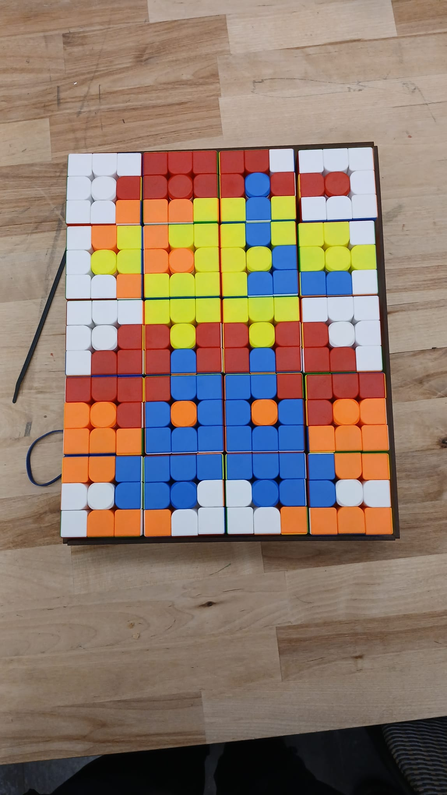
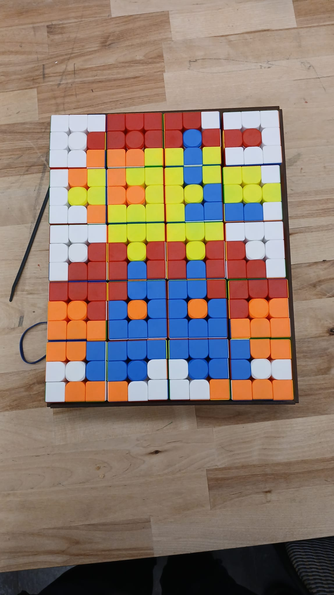

General Overview
Overall System — The mechanical portion of this project concerned how the motors are mounted/positioned in a way that can solve certain configurations of the cube given an image and how we can present the cube to the user in a specific configuration.
Motors + Mounts and General Structure - We utilize five NEMA17 motors to physically turn the cube. Mounted on the shafts of the Nemas are 3D printed pieces that allow these five motors - mounted on 4 sides + the relative bottom - to turn the cube. Throughout our machine, we utilize lasercut ¼ inch acrylic to create the basis/foundation for the sliding mechanism and the general housing of our entire machine. We utilized a collection of different colored acrylic to make our casing aesthetically pleasing and functional. The motor mounts slide along acrylic rods to move the motors in and out of clamping the cube. These moving motor mounts allowed the motors to detach from the cube, allowing us to place the cubes manually in the frame.
Lead Screw Elevator — In order to detach from the cube, motor mounts detach from the sides of the cube, and a lead screw elevator slowly brings the rubiks cube down to place the rubik's cube flat on the face of the structure. This lead screw implementation allows the user to easily grab the cube without manually detaching any connections between the machine and the cube.
Timed Belt + Pulley System — In order to move the motor mounts suspended on acrylic rods, we utilize a belt and pulley system that drives paired motor mounts towards and away from the cube.
Mechanical Development Cycle
In this phase, our main concern was developing the solver mechanism. We prototyped a general basis for the Rubik's cube solving using ¼ inch MDF, 3D-printed motor mounts, and tape. Given a mechanical chassis, electrical and software testing could progress.

Given the general basis was for software and electrical testing, these phases instead focused on mechanical prototyping, testing many designs for proof of concept.

With proof of concept for our mechanisms like the belt and pulley system, we were capable of final prototyping and assembly. This concerned cutting the final acrylic and assembling the final machine for solving the Rubik's cube.